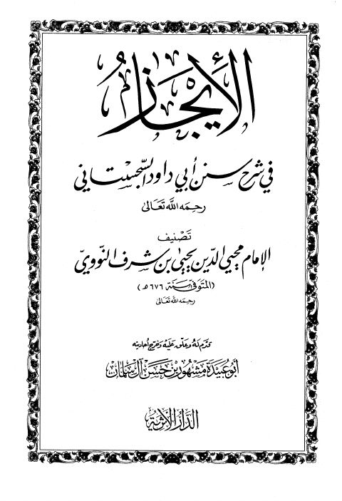

Downloads need an internet connection.
الإيجاز في شرح سنن أبي داود السجستاني
Authors: يحيى بن شرف النووي
Editors: مشهور بن حسن آل سلمان
Publishers: الدار الأثرية
**▫️ العنوان: الإيجاز في شرح سنن أبي داود السجستاني** ▪️ المؤلف: #يحيى_بن_شرف_النووي ▫️ المحقق: #مشهور_بن_حسن_آل_سلمان ▪️ الناشر: #الدار_الأثرية ▫️ تاريخ النشر: 1428هـ 2007م ▪️ بلد النشر: عمان، #الأردن ▫️ الطبعة: 1 ▪️ عدد الأجزاء: 1 ▫️ الصفحات: 471 ▪️ نوع الوعاء: #كتاب ▫️ التصنيف الرئيسي: #الحديث_وعلومه ▪️ التصنيف الفرعي: #شروحات ۪